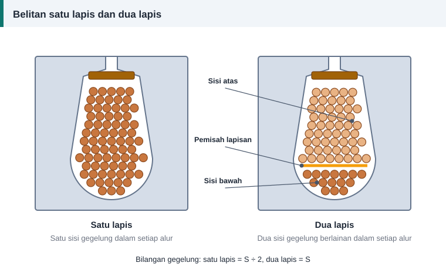

Panduan bengkel
Belitan Satu Lapis dan Dua Lapis: Perbezaan dan Pilihan
Buka dua motor yang berlainan saiz dan anda mungkin melihat dua cara mengisi alur. Yang satu kemas dengan gegelung besar yang jarang-jarang, yang satu lagi padat dengan gegelung kecil yang bertindih. Perbezaan itu bukan soal gaya. Ia menentukan bilangan gegelung, lilitan setiap gegelung dan kelicinan medan magnet.


Perbezaan asas
Dalam belitan satu lapis, setiap alur mengandungi satu sisi gegelung sahaja. Dalam belitan dua lapis, setiap alur mengandungi dua sisi daripada dua gegelung berlainan: satu di bahagian bawah alur dan satu di bahagian atas, dipisahkan oleh sekeping penebat.
Perbandingan sebelah-menyebelah
| Perkara | Satu lapis | Dua lapis |
|---|---|---|
| Sisi gegelung setiap alur | 1 | 2 |
| Bilangan gegelung | S ÷ 2 | S |
| Lilitan setiap gegelung | Sama dengan konduktor per alur | Separuh konduktor per alur |
| Rentang gegelung | Pic penuh secara berkesan | Boleh dipendekkan dengan bebas |
| Pemisah di dalam alur | Tidak perlu | Perlu di antara lapisan |
| Ruang untuk kuprum | Lebih banyak | Sedikit berkurang |
| Bentuk gelombang medan | Lebih banyak harmonik | Lebih licin |
| Kerja memasukkan gegelung | Lebih cepat | Lebih banyak gegelung, lebih teliti |
| Kegunaan lazim | Motor kecil | Motor sederhana dan besar |
S ialah bilangan alur stator.
Mengira lilitan setiap gegelung
Katakan pengiraan memberi 38 konduktor per alur untuk stator 36 alur.
- Satu lapis: setiap gegelung mempunyai 38 lilitan, dan stator memerlukan 18 gegelung.
- Dua lapis: setiap gegelung mempunyai 19 lilitan, dan stator memerlukan 36 gegelung.
Dalam belitan dua lapis, bilangan konduktor per alur mestilah nombor genap.
Bolehkah ditukar semasa lilitan semula?
Daripada dua lapis kepada satu lapis: tidak digalakkan. Panduan amalan baik EASA/AEMT menyatakan bahawa penukaran itu mengurangkan kecekapan motor, kerana belitan dua lapis mengagihkan fluks di dalam teras dengan lebih baik.
Daripada sepusat satu lapis kepada lap dua lapis: boleh diterima jika fluks setiap kutub dikekalkan, iaitu hasil darab lilitan per fasa dan faktor belitan tidak berubah. Belitan lap itu perlu dipendekkan picnya dengan sesuai.
Cara mengenal jenis belitan lama
- Lihat ke dalam alur selepas baji dibuka. Kepingan pemisah di tengah alur menandakan belitan dua lapis.
- Kira gegelung. Bilangan yang sama dengan bilangan alur bermaksud dua lapis; separuh daripadanya bermaksud satu lapis.
- Belitan dua lapis mempunyai hujung gegelung yang semuanya serupa dan bertindih seperti sisik ikan.
Pilihan dalam kalkulator
Kalkulator lilitan semula meminta jenis lapisan kerana ia mengubah dua perkara: cara konduktor per alur dibundarkan, dan sama ada faktor pic diambil kira. Pilih jenis yang sama dengan belitan asal motor anda.
Rujukan dan bacaan lanjut
Artikel berkaitan
Belitan Lap dan Belitan Sepusat: Cara Mengenal dan Melilitnya
Dua bentuk gegelung paling biasa ditemui dalam stator motor aruhan ialah lap dan sepusat. Ketahui rupa, kelebihan, cara membaca rentangnya dan bila setiap satu digunakan.
Pic Kutub, Rentang Gegelung dan Faktor Pic
Rentang gegelung yang lebih pendek daripada pic kutub menjimatkan kuprum dan melicinkan gelombang voltan. Pelajari cara mengira pic kutub, rentang dan faktor pic dengan contoh.
Cara Merekod Data Belitan Sebelum Membuka Motor
Lima minit mencatat data sebelum memotong belitan lama menjimatkan berjam-jam meneka kemudian. Gunakan senarai semak ini untuk plat nama, teras, gegelung, dawai dan sambungan.